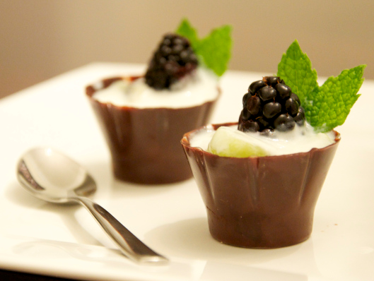

It's coffee break time! It's coffee break time!
It's coffee break time! It's coffee break time! The CAFE & BAKERY offers the finest coffees, ties, lemonade and old-fashioned sodas. Our menu includes gourmet sandwitches, freshly made soups and specialty salads. We also offer a wide assortment of cookies, brownies/bars, pastries, pies, cheesecake and gourmet cakes available whole or by the slice all throughout the day.Well there is nothing quite like a delicious dessert to top off a fabulous meal...these are great for that special occasion or just for indulging that guilty pleasure, no need for a specific occasion to treat yourself! We try to keep an assortment of classic desserts on hand at all times, so call ahead or come in and check out our selection...feel free to order in advance to insure we have what you are looking for!
Tucked amidst 19th-century Creole cottages and restored shotgun houses in the picturesque Faubourg Marigny, Cake Cafe is a family-run neighborhood eatery where customers enjoy a hearty menu of breakfast and lunch offerings skillfully created from the freshest of local ingredients. Try Chef/Owner Steve Himelfarb’s unique take on Shrimp and Grits, Boudin and Eggs, or his unforgettable Crab and Brie Sandwich served on homemade challah bread. Cake Cafe is also a full bakery, offering a pastry case bursting with delicious sweet and savory treats, from delectable Chocolate Almond Croissants to our popular fresh bagels. And be sure to check out the daily variety of cupcakes that can be had for just $1 with a meal. We also offer our award-winning cakes made to order. And, during Mardi Gras season, don’t miss Steve’s awesome Apple and Goat Cheese King Cake. Stop in and discover the Cake Cafe – steeped in the New Orleans restaurant tradition of being a place to find good food and good people. Bienvenue!